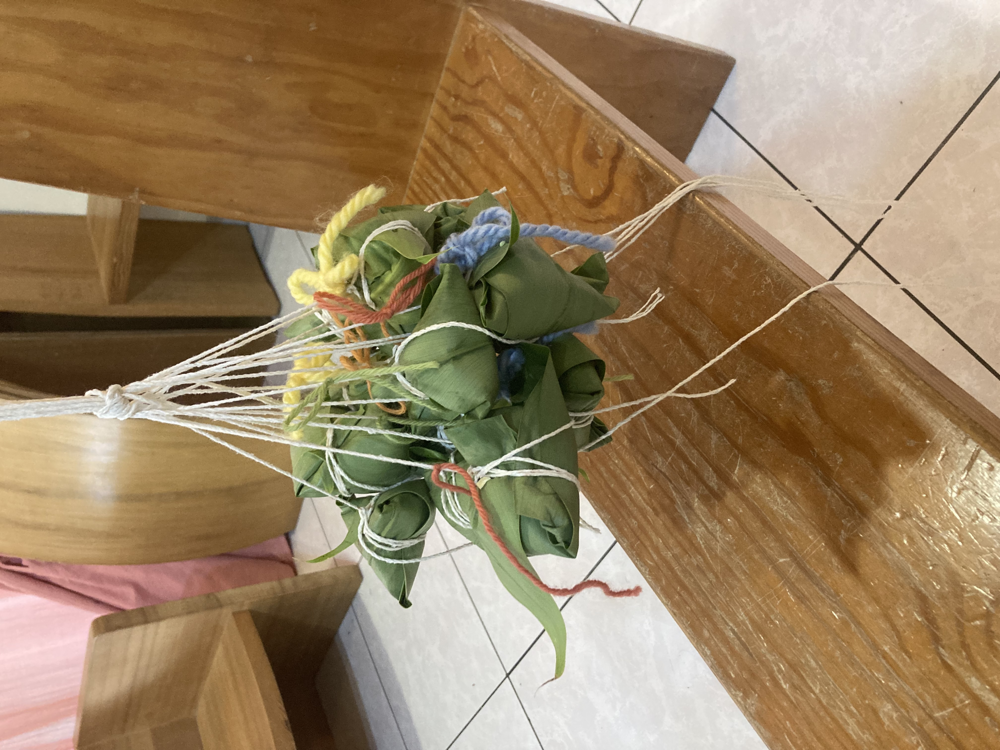
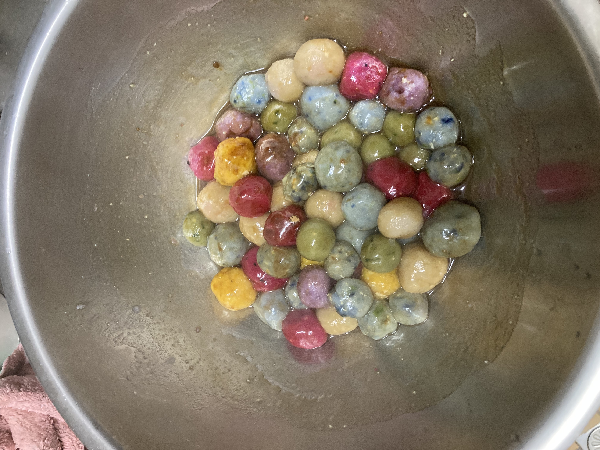
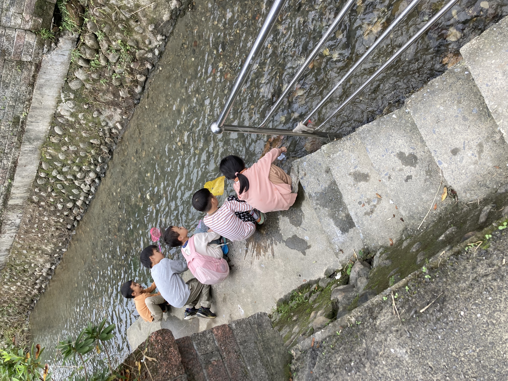

老師介紹
照片
丁旋 老師
現任
- 五芒星星親子共學園 帶領老師 (2020 ~ )
- 星禾課後照顧老師 (2020 ~ )
專業背景
- 宜蘭慈心華德福幼兒園14年教學經驗
- 居家到府保母
- 臺灣華德福教育師資養成課程認證
- 國際學士後人智醫學培訓(IPMT)五年結業
- 台灣四年制治療教育與社會治療學程 研修中
- 台灣生命史課程三年 研修中
- 台灣人智學 研修中
- 台灣星智學帶狀課程 研修中
課後班特色

[請在此放入故事手作照片]檔名：故事照片.jpg'">
故事與手作藝術
透過聽故事的圖像滋養，開啟孩子內在的想像力與感官體驗；書畫與手工引導孩子將內在情感透過指尖的專注凝聚成型。我們在靜謐的呼吸律動中，陪伴孩子浸潤於生活美學，逐步鍛鍊滋養心靈的意志力與創造力。

[請在此放入生活烘焙照片]檔名：烘焙照片.jpg'">
飲食與生活烘焙
烘焙是一場結合自然科學與生活美學的呼吸旅程。孩子們親手揉麵、感受食材在四季之之中質地變化，透過身體的實際參與，体验從土地到餐桌的勞動喜悅。這不僅點燃了孩子的熱情與活力，更在動手做的過程中學會分享與感恩

[請在此放入在地探索照片]檔名：探索照片.jpg'">
大自然在地探索
走出教室，深入茶園/社區健走和戶外遊戲，讓孩子們將肢體全然舒展於冬山的土地與陽光下。透過與大自然的規律互動、攀爬與奔跑，孩子能深刻鍛鍊粗大動作與感官平衡，在自然的懷抱中長出健康、剛強且自信的體魄。